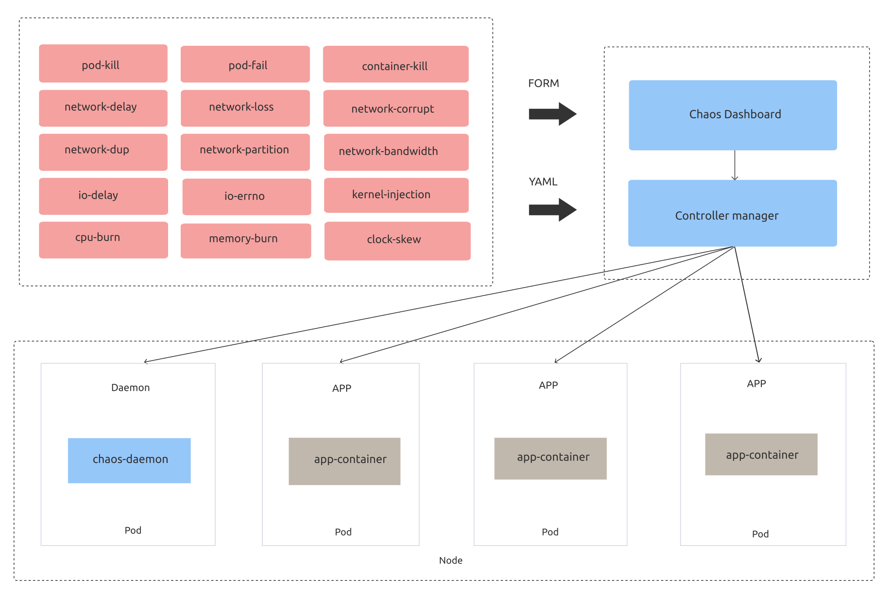

Chaos Mesh®
A Powerful Chaos Engineering Platform for Kubernetes
Easy to Use
No special dependencies, Chaos Mesh can be easily deployed directly on Kubernetes clusters, including Minikube and Kind.
- Require no modification to the deployment logic of the system under test (SUT)
- Easily orchestrate fault injection behaviors in chaos experiments
- Hide underlying implementation details so that users can focus on orchestrating the chaos experiments
# Install on Kubernetescurl -sSL https://raw.githubusercontent.com/chaos-mesh/chaos-mesh/master/install.sh | bash
Designed for Kubernetes
Chaos Mesh uses CustomResourceDefinitions (CRD) to define chaos objects. In the Kubernetes realm, CRD is a mature solution for implementing custom resources, with abundant implementation cases and toolsets available. Using CRD makes Chaos Mesh naturally integrate with the Kubernetes ecosystem.
Chaos Mesh® is a Cloud Native Computing Foundation sandbox project